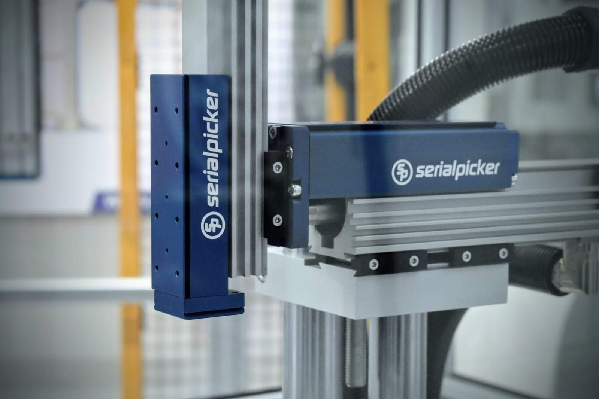

Appunti di automazione · novembre 2026
Il manuale della guida lineare è scritto per un ambiente che non esiste. Aria pulita, temperatura stabile, un tecnico con il panno in mano e tutto il tempo del mondo. Poi la guida la monti in un fine linea vero — sopra una formatrice di cartoni, accanto a un dosatore di farina, dove si taglia legno tutto il giorno — e quel manuale comincia a mentire dal primo mese. In quasi vent'anni di impianti ho visto più guide morte per polvere che per fatica: non si rompono, si consumano in un bagno di sporco che nessuno aveva messo in conto.
Perché la polvere, su un asse, non è sporco estetico. È un terzo elemento che si infila nel contatto tra sfera e pista e cambia la tribologia del sistema. La polvere di cartone è fibrosa e igroscopica: assorbe la lubrificazione come una spugna, e il grasso sparisce dentro la fibra. La farina è fine: entra dove entra l'aria e con l'umidità impasta. La segatura è abrasiva di suo. In tutti e tre i casi il risultato è lo stesso: grasso contaminato, pasta abrasiva, piste che si rigano un micron alla volta.

La prima vittima non è la guida: sono le tenute. I tergipista e le guarnizioni del carrello sono parti sacrificali, si consumano loro per non far entrare il mondo dentro le sfere. Finché il labbro è integro, il sistema perdona molto. Quando il labbro è mangiato — e in ambiente di cartone si mangia in fretta — la polvere passa, e da quel momento l'orologio corre. Il segnale è visibile a occhio nudo: il grasso che trasuda dalle tenute esce nero. Grasso nero significa che dentro non c'è più lubrificante, c'è fango.
Le piste si usurano in modo diverso da come racconta il catalogo. La vita teorica si calcola in chilometri con carico pulito; qui l'usura è irregolare, concentrata dove il carrello lavora di più — a metà corsa, nei punti di inversione — per vaiolatura e rigatura. La cremagliera soffre in un altro modo: la polvere si deposita nei vani dei denti, il pignone la impasta a ogni passaggio e la trasmissione diventa rumorosa molto prima che imprecisa. Le cinghie dentate raccolgono farina nei denti e nei casi peggiori, con carichi al limite, arrivano a saltare. E poi c'è la dimenticata da tutti: la catena portacavi. Si riempie di polvere per mesi, e a ogni corsa ne piove un po' sulle guide che stanno sotto. Pulire le piste e non guardare mai dentro la catena è come lavarsi le mani con i guanti sporchi.
Funzionano: i tergipista integri e sostituiti quando serve, le tenute laterali aggiuntive dove il costruttore le prevede, i soffietti senza strappi, le coperture telescopiche sulle corse lunghe esposte. Funziona anche una scelta banale di montaggio: orientare la guida in modo che la pista non guardi in alto, quando il layout lo permette — una pista che non fa da vassoio raccoglie metà dello sporco. E funzionano i sistemi di lubrificazione integrata, quelli con il feltro a lento rilascio nel tergipista: poca quantità, continua, senza aprire niente.
Il teatro è un altro elenco, e l'ho visto recitare spesso. Soffiare con l'aria compressa a piena pressione contro le tenute: il getto spinge la polvere oltre il labbro, dentro il carrello, dove non deve stare — l'aria si usa a bassa pressione, lontano dalle guarnizioni, o non si usa. Ingrassare sopra lo sporco senza pulire prima: sigilli la pasta abrasiva dentro e la fai lavorare. Il carter «sigillato» che nessuno apre mai: dentro, al buio, l'ambiente è peggio che fuori, e lo scopri al primo guasto. A mio avviso la regola è una sola: la protezione migliore è quella che qualcuno guarda almeno una volta al mese. Il resto è scenografia per la foto del collaudo.
Veniamo ai numeri, che è dove il manuale mente di più. Se il costruttore dichiara una lubrificazione ogni sei mesi, in un ambiente con polvere di cartone quell'intervallo va dimezzato; in uno di farina, ripensato da zero. La manutenzione vera, quella che ho visto funzionare, sta su tre ritmi diversi. Pulizia esterna delle piste: settimanale nei reparti normali, ogni due o tre giorni dove il cartone si lavora in continuo — panno privo di lanugine, niente solventi aggressivi sulle guarnizioni di gomma. Controllo delle tenute: mensile, cinque minuti, si guarda il labbro e il colore del grasso. Lubrificazione: poco grasso, spesso, e sempre dopo aver pulito — prima si pulisce la pista, poi si ingrassa dal nipplo facendo fare al carrello qualche corsa lenta per distribuire, poi si toglie l'eccesso. Il grasso in eccesso non è una riserva: è una calamita per la polvere, e va levato.
Due errori da non fare mai. Mescolare grassi diversi — al litio con uno sintetico — perché le basi possono reagire e lubrifica meno di entrambi. E aspettare il fermo programmato di agosto: in un ambiente sporco la manutenzione va legata ai cambi formato e alle fermate che la linea fa già. Chi aspetta agosto, a luglio lavora già a secco. Dipende dall'ambiente, certo — un conto è un fine linea di imbottigliamento, un altro una cartotecnica — ma la direzione è sempre quella: intervalli più corti di quelli dichiarati, e decisi guardando lo sporco reale, non la tabella.
Un asse in ambiente sporco non muore in silenzio: parla, settimane prima. Il primo segnale è il rumore, che cambia carattere — dal ronzio regolare a un raschio leggero nelle inversioni. Il secondo lo senti con la mano: a macchina ferma e scarica, il carrello deve scorrere uniforme per tutta la corsa; se in un punto «gratta» o si impunta, la pista è segnata proprio lì. Il terzo segnale lo vede il drive prima di tutti: l'assorbimento del motore sale a parità di ciclo e di carico, perché l'attrito è aumentato — chi guarda il trend della corrente ha un sensore di usura gratis. Poi vengono gli errori di posizionamento che prima non c'erano, il gioco che si sente muovendo il carrello, il grasso nero di cui dicevo.
Ignorare questi segnali non fa risparmiare una manutenzione: la trasforma in un fermo. E un asse fermo in produzione non è un problema dell'asse, è un fermo linea con tutto quello che si porta dietro — è lo stesso meccanismo per cui il collo di bottiglia si misura sui fermi, non sulle schede tecniche. La manutenzione vera, alla fine, è questa: osservazione regolare, intervalli onesti rispetto all'ambiente, e il manuale usato per quello che sa fare — dire che grasso mettere — e non per quello che non può sapere, cioè quanta polvere c'è nell'aria del tuo reparto. L'aria sporca non si elimina. Si governa, o si paga in guide.